2 Tidy Data & Basics of Graphics
Reading: 31 minute(s) at 200 WPM.
Videos: 14 minutes
Objectives
- Recognize tidy data formats and identify the variables and columns in data sets
- Read in data from common formats into R
- Describe charts using the grammar of graphics
- Create layered graphics that highlight multiple aspects of the data
- Evaluate existing charts and develop new versions that improve accessibility and readability
Check-ins
There are two check-ins for this week:
2.1 Tidy Data
In the pre-reading, we learned about Basic Data Types (strings/characters, numeric/double/floats, integers, and logical/booleans) and Data Structures (1D - vectors and lists; 2D - matrices and data frames). This class will mainly focus on working with data frames. It is important to know the type and format of the data you’re working with. It is much easier to create data visualizations or conduct statistical analyses if the data you use is in the right shape.
Data can be formatted in what are often referred to as wide format or long format. Wide format data has variables spread across columns and typically uses less space to display. This format is how you would typically choose to present your data as there is far less repetition of labels and row elements. Long format data is going to have each variable in a column and each observation in a row; this is likely not the most compact form of the data.
Long formatted data is often what we call tidy data - a specific format of data in which each variable is a column, each observation is a row and each type of observational unit forms a table (or in R, a data frame).
Same data, different layouts
Can you determine which of the following data sets follows the tidy data format?
| Name | Treatment A | Treatment B |
|---|---|---|
| Brian Boatwright | NA | 18 |
| Trenna Porras | 4 | 1 |
| Hannaa Kumar | 6 | 7 |
| Treatment | Brian Boatwright | Trenna Porras | Hannaa Kumar |
|---|---|---|---|
| A | NA | 4 | 6 |
| B | 18 | 1 | 7 |
| Name | Treatment | Measurement |
|---|---|---|
| Brian Boatwright | A | NA |
| Trenna Porras | A | 4 |
| Hannaa Kumar | A | 6 |
| Brian Boatwright | B | 18 |
| Trenna Porras | B | 1 |
| Hannaa Kumar | B | 7 |
Option 3 follows the tidy data format since each variable (Name, Treatment, and Measurement) belong to their own columns and each observation taken is identified by a single row.
Data frames are a specific object type in R, data.frame(), and can be indexed the same as matrices. It may be useful to actually look at your data before beginning to work with it to see the format of the data. The following functions in R help us learn information about our data sets:
-
class(): outputs the object type -
names(): outputs the variable (column) names -
head(): outputs the first 6 rows of a dataframe -
glimpse()orstr(): output a transpose of dataframe or matrix; shows the data types -
summary()outputs 6-number summaries or frequencies for all variables in the data set depending on the variables data type -
data$variable: extracts a specific variable (column) from the data set
You may also choose to click on the data set name in your Environment window pane in R and the data set will pop up in a new tab in the script pane.
Working with data sets in R
The cars data set is a default data set that lives in R (for examples like this!).
# outputs the class of the cars data set (data.frame)
class(cars)[1] "data.frame"# outputs the names of the variables included in the cars data set (speed, dist)
names(cars)[1] "speed" "dist" # outputs the first six rows of the cars data set
head(cars) speed dist
1 4 2
2 4 10
3 7 4
4 7 22
5 8 16
6 9 10# outputs
summary(cars) speed dist
Min. : 4.0 Min. : 2.00
1st Qu.:12.0 1st Qu.: 26.00
Median :15.0 Median : 36.00
Mean :15.4 Mean : 42.98
3rd Qu.:19.0 3rd Qu.: 56.00
Max. :25.0 Max. :120.00 # outputs the second row of the cars data set
cars[2,] speed dist
2 4 10# outputs the first column of the cars data set as a vector
cars[,1] [1] 4 4 7 7 8 9 10 10 10 11 11 12 12 12 12 13 13 13 13 14 14 14 14 15 15
[26] 15 16 16 17 17 17 18 18 18 18 19 19 19 20 20 20 20 20 22 23 24 24 24 24 25# outputs the speed variable of the cars data set as a vector (notice this is the same as above)
cars$speed [1] 4 4 7 7 8 9 10 10 10 11 11 12 12 12 12 13 13 13 13 14 14 14 14 15 15
[26] 15 16 16 17 17 17 18 18 18 18 19 19 19 20 20 20 20 20 22 23 24 24 24 24 25:::
In a perfect world, all data would come in the right format for our needs, but this is often not the case. We will spend the next few weeks learning about how to use R to reformat our data to follow the tidy data framework and see why this is so important. For now, we will work with nice clean data sets but you should be able to identify when data follows a tidy data format and when it does not.
2.1.0.1 Wait. So is it Tidy format?
The concept of tidy data is useful for mapping variables from the data set to elements in a graph, specifications of a model, or aggregating to create summaries. However, what is considered to be “tidy data” format for one task, might not be in the correct “tidy data” format for a different task. It is important for you to consider the end goal when restructuring your data.
Part of this course is building the skills for you to be able to map your data operation steps from an original data set to the correct format (and output).
2.2 Loading External Data
2.2.1 An Overview of External Data Formats
In order to use statistical software to do anything interesting, we need to be able to get data into the program so that we can work with it effectively. For the moment, we’ll focus on tabular data - data that is stored in a rectangular shape, with rows indicating observations and columns that show variables (like tidy data we learned about above!). This type of data can be stored on the computer in multiple ways:
-
as raw text, usually in a file that ends with
.txt,.tsv,.csv,.dat, or sometimes, there will be no file extension at all. These types of files are human-readable. If part of a text file gets corrupted, the rest of the file may be recoverable.-
.csv“Comma-separated” -
.txtplain text - could be just text, comma-separated, tab-separated, etc.
-
-
in a spreadsheet. Spreadsheets, such as those created by MS Excel, Google Sheets, or LibreOffice Calc, are not completely binary formats, but they’re also not raw text files either. They’re a hybrid - a special type of markup that is specific to the filetype and the program it’s designed to work with. Practically, they may function like a poorly laid-out database, a text file, or a total nightmare, depending on who designed the spreadsheet.
.xls.xlsx
There is a collection of spreadsheet horror stories here and a series of even more horrifying threads here.
Also, there’s this amazing comic:
To be minimally functional in R, it’s important to know how to read in text files (CSV, tab-delimited, etc.). It can be helpful to also know how to read in XLSX files.
Learn more about external data
Additional external data formats
We will not cover binary files and databases, but you can consult one or more online references if you are interested in learning about these.
-
as a binary file. Binary files are compressed files that are readable by computers but not by humans. They generally take less space to store on disk (but the same amount of space when read into computer memory). If part of a binary file is corrupted, the entire file is usually affected.
- R, SAS, Stata, SPSS, and Minitab all have their own formats for storing binary data. Packages such as
foreignin R will let you read data from other programs, and packages such ashavenin R will let you write data into binary formats used by other programs. We aren’t going to do anything with binary formats, just know they exist.
- R, SAS, Stata, SPSS, and Minitab all have their own formats for storing binary data. Packages such as
- in a database. Databases are typically composed of a set of one or more tables, with information that may be related across tables. Data stored in a database may be easier to access, and may not require that the entire data set be stored in computer memory at the same time, but you may have to join several tables together to get the full set of data you want to work with.
There are, of course, many other non-tabular data formats – some open and easy to work with, some inpenetrable. A few which may be more common:
Web related data structures: XML (eXtensible markup language), JSON (JavaScript Object Notation), YAML. These structures have their own formats and field delimiters, but more importantly, are not necessarily easily converted to tabular structures. They are, however, useful for handling nested objects, such as trees. When read into R, these file formats are usually treated as lists, and may be restructured afterwards into a format useful for statistical analysis.
Spatial files: Shapefiles are by far the most common version of spatial files1. Spatial files often include structured encodings of geographic information plus corresponding tabular format data that goes with the geographic information.
2.2.2 Where does my data live?
The most common way to read data into R is with the read_csv() function. You may provide the file input as either a url to the data set or a path for the file input.
The read_csv() function belongs to the readr package (side note: readr is installed and loaded as part of the tidyverse package). To install, either click on your Packages tab or use:
install.packages("readr")read_csv()
# load the readr package (or alternatively the tidyverse package)
library(readr)
# this will work for everyone!
surveys <- read_csv(file = "https://raw.githubusercontent.com/earobinson95/stat331-calpoly/master/lab-assignments/Lab2-graphics/surveys.csv")
# this will work only on my computer
# notice this is an absolute file path on my computer
surveys <- read_csv(file = "C:/Users/erobin17/OneDrive - Cal Poly/stat331/labs/lab2/surveys.csv")Recall our discussion about Directories, Paths, and Projects. Often you will specify a relative file path to your data set rather than an absolute file path. This works if the file is in the same directory as the code or within a sub-folder of the same directory as the code.
Relative file paths
# this will work if the file is in the same directory as the code
# (i.e., the Quarto document and the data are in the same folder)
surveys <- read_csv(file = "surveys.csv")
# this will work if a sub-folder called "data" is in the same directory as the code
# (i.e., you first have to enter the data sub folder and then you can access the surveys.csv data set)
surveys <- read_csv(file = "data/surveys.csv")I often organize my workflow with sub-folders so that I would have a sub-folder called data to reference from my base directory location.
You can either choose to create an overall data sub-folder right within your stat331 folder (e.g., stat331 > data) and store all of your data for your class there… or you may choose to store the data associated with each individual assignment within that folder (e.g., stat331 > labs > lab2 > data).
But wait! I thought we created our RProjects (my-stat331.Rproj) to indicate our “home base” directory? When working with a Quarto document, this changes your base directory (for any code running within the .qmd file) to the same folder the .qmd file lives in.
Open your class directory my-stat331.Rproj and type getwd() into the Console. This should lead you to the folder directory your RProject was created in.
Now open your lab1.qmd assignment and type getwd() into a code chunk. This should lead you to the folder directory your lab1.qmd file is saved in.
Ugh. Well that is confusing.
A great solution to consistency in file paths is the here package:
install.packages("here")
This package thinks “here” is the your directory folder the RProject (my-331.Rproj) lives in (e.g., your stat331 folder). This makes a global “home base” that overrides any other directory path (e.g., from your .qmd files).
# shows you the file path the function here() will start at.
here::dr_here()The here package
If my stat331 file structure looks like this:

then my RProject sets the working directory to this stat331 folder. However, if my lab1.qmd file lives inside my labs folder – e.g., C:/Users/erobin17/OneDrive - Cal Poly/stat331/labs/lab1.qmd, then when I try to load data (surveys.csv) in within the lab1.qmd file, it will be looking for that relative file path from within the labs folder (where the lab1.qmd lives) and not from within the stat331 (“home base”) folder.
surveys <- read_csv("surveys.csv")However, if my data is stored within a data sub-folder as shown above, then within my lab1.qmd file, my relative file path must “backtrack” (..) out of the labs folder one move before entering into the data folder to access the data set.
surveys <- read_csv("../data/surveys.csv")Enter the here package! With the here package, within my lab1.qmd file I can ALWAYS assume I am in my stat331 (“home base”) folder and enter directly into the data sub-folder.
Note the folder and file names are in quotations because they are names of files and not objects in R.
Using “::” before the function (e.g., PackageName::FunctionName) is a way of telling R which package the function lives in without having to load that entire package (e.g., library(PackageName). There are some common functions the R community does this for mainly just out of practice. here is one of them and you will often see here::here() telling you to go into the here package and access/use the here() function. Essentially it saves memory from not having to load unnecessary functions if you only need one function from that package.
I have a complicated relationship with the here package. I see the strong uses for it, but I don’t always set up my workflow in this way. You will form your own opinions, but the important thing for you to know is how to find the correct file path to read your data into your .qmd files.
2.2.3 How do I load in my data?
It may be helpful to save this data import with the tidyverse cheat sheet.
(required) Read the following to learn more about importing data into R
Previously in this chapter, we learned about common types of data files and briefly introduced the read_csv() and function. There are many functions in R that read in specific formats of data:
Base R contains the read.table() and read.csv() functions. In read.table() you must specify the delimiter with the sep = argument. read.csv() is just a specific subset function of read.table() that automatically assumes a comma delimiter.
# comma delimiter
read.table(file = "ages.txt", sep = ",")
# tab delimiter
read.table(file = "ages.txt", sep = "\t")The tidyverse has some cleaned-up versions in the readr and readxl packages:
-
read_csv()works likeread.csv, with some extra stuff -
read_txv()is for tab-separated data -
read_table()is for any data with “columns” (white space separating) -
read_delim()is for special “delimiters” separating data -
read_xlsx()is specifically for dealing with Excel files
Learn more
- RSQLite vignette
- Slides from Jenny Bryan’s talk on spreadsheets (sadly, no audio. It was a good talk.)
- The
vroompackage works likeread_csvbut allows you to read in and write to many files at incredible speeds.
Check-in 2.1: Loading in Data
For this check-in you are asked to work through reading in different data sets. The folder Age_Data contains several data sets with the names and ages of five individuals. The data sets are stored as different file types. Download Ages_data.zip here, make sure to unzip the folder, save these in a reasonable place (e.g., stat331 > check-ins > checkin2.1 or stat331 > week2), then use the readr and readxl packages to complete the following and fill in the “gap” code in the Canvas quiz:

- Load the appropriate packages for reading in data.
- Read in the data set ages.csv
- Read in the data set ages_tab.txt
- Read in the data set ages_mystery.txt
- Read in the data set ages.xlsx
- Find a way to use
read_csv()to read ages.csv with the variable “Name” as a factor data type and “Age” as a character data type.
2.3 Basics of Graphics
Now that we understand the format of tidy data and how to load external data into R, we want to be able to do something with that data! We are going to start with creating data visualizations (arguably my favorite!).
There are a lot of different types of charts, and equally many ways to categorize and describe the different types of charts.
This is one of the less serious schemes I’ve seen
But, in my opinion, Randall missed the opportunity to put a pie chart as Neutral Evil.

Hopefully by the end of this, you will be able to at least make the charts which are most commonly used to show data and statistical concepts.
2.3.1 Why do we create graphics?
The greatest possibilities of visual display lie in vividness and inescapability of the intended message. A visual display can stop your mental flow in its tracks and make you think. A visual display can force you to notice what you never expected to see. (“Why, that scatter diagram has a hole in the middle!”) – John Tukey, Data Based Graphics: Visual Display in the Decades to Come
Fundamentally, charts are easier to understand than raw data.
When you think about it, data is a pretty artificial thing. We exist in a world of tangible objects, but data are an abstraction - even when the data record information about the tangible world, the measurements are a way of removing the physical and transforming the “real world” into a virtual thing. As a result, it can be hard to wrap our heads around what our data contain. The solution to this is to transform our data back into something that is “tangible” in some way – if not physical and literally touch-able, at least something we can view and “wrap our heads around”.
Consider this thought experiment: You have a simple data set - 2 numeric variables, 500 observations. You want to get a sense of how the variables relate to each other. You can do one of the following options:
- Print out the data set
head(simple_data)# A tibble: 6 × 2
var1 var2
<dbl> <dbl>
1 0.975 16.9
2 6.10 178.
3 4.61 103.
4 6.49 173.
5 6.60 190.
6 6.45 170. - Create some summary statistics of each variable and perhaps the covariance between the two variables
summary(simple_data) var1 var2
Min. :0.03114 Min. :-35.87
1st Qu.:2.42756 1st Qu.: 31.48
Median :5.10491 Median :103.93
Mean :4.98367 Mean :132.78
3rd Qu.:7.29845 3rd Qu.:219.89
Max. :9.97662 Max. :432.62 cov(simple_data$var1, simple_data$var2)[1] 324.7271- Draw a scatter plot of the two variables
ggplot(data = simple_data,
mapping = aes(x = var1,
y = var2
)
) +
geom_point()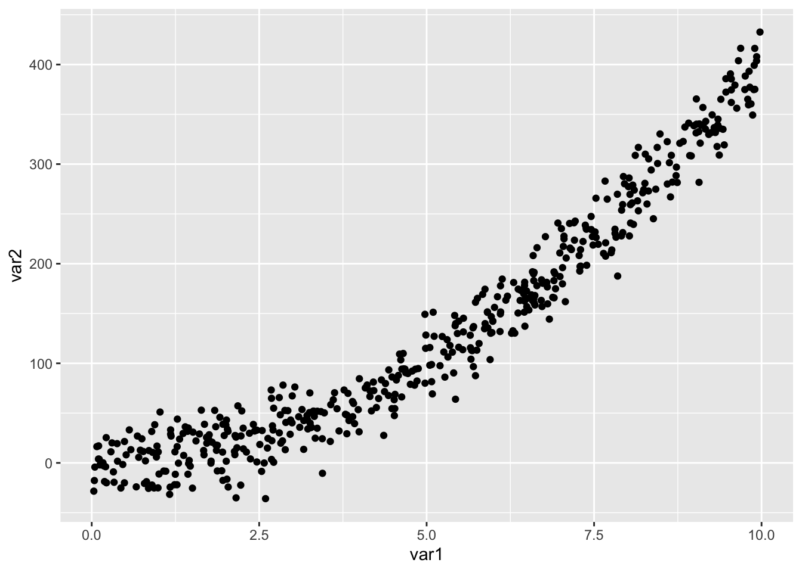
Which one would you rather use? Why?
Our brains are very good at processing large amounts of visual information quickly. Evolutionarily, it’s important to be able to e.g. survey a field and pick out the tiger that might eat you. When we present information visually, in a format that can leverage our visual processing abilities, we offload some of the work of understanding the data to a chart that organizes it for us. You could argue that printing out the data is a visual presentation, but it requires that you read that data in as text, which we’re not nearly as equipped to process quickly (and in parallel).
It’s a lot easier to talk to non-experts about complicated statistics using visualizations. Moving the discussion from abstract concepts to concrete shapes and lines keeps people who are potentially already math or stat phobic from completely tuning out.
You’re going to learn how to make graphics by finding sample code, changing that code to match your data set, and tweaking things as you go. That’s the best way to learn this, and while ggplot has a structure and some syntax to learn, once you’re familiar with the principles, you’ll still want to learn graphics by doing it.
2.3.2 ggplot2
In this class, we’re going to use the ggplot2 package to create graphics in R. This package is already installed as part of the tidyverse, but can be installed:
install.packages("ggplot2")and/or loaded:
library("ggplot2")
# alternatively
library("tidyverse") # (my preference!)
We will learn about all of these different pieces and the process of creating graphics by working through examples, but there is a general “template” for creating graphics in ggplot:
ggplot(data = <DATA>,
mapping = aes(<MAPPINGS>)
) +
<GEOM FUNCTION>() +
any other arugments ...where
- is the name of the data set
is the name of the geom you want for the plot (e.g., geom_histogram(),geom_line(),geom_point())is where variables from the data are mapped to parts of the plot (e.g., x = speed,y = distance,color = carmodel)- any other arguments could include the theme, labels, faceting, etc.
You may want to download and save cheat sheets and reference guides for ggplot.
2.3.3 The Grammar of Graphics
The grammar of graphics is an approach first introduced in Leland Wilkinson’s book (Wilkinson 2005). Unlike other graphics classification schemes, the grammar of graphics makes an attempt to describe how the data set itself relates to the components of the chart.
This has a few advantages:
- It’s relatively easy to represent the same data set with different types of plots (and to find their strengths and weaknesses)
- Grammar leads to a concise description of the plot and its contents
- We can add layers to modify the graphics, each with their own basic grammar (just like we combine sentences and clauses to build a rich, descriptive paragraph)

I have turned off warnings for all of the code chunks in this chapter. When you run the code you may get warnings about e.g. missing points - this is normal, I just didn’t want to have to see them over and over again - I want you to focus on the changes in the code.
Exploratory Data Analysis with the grammar of graphics

When creating a grammar of graphics chart, we start with the data (this is consistent with the data-first tidyverse philosophy).
Identify the dimensions/aspects of your data set you want to visualize.
-
Decide what aesthetics you want to map to different variables. For instance, it may be natural to put time on the \(x\) axis, or the experimental response variable on the \(y\) axis. You may want to think about other aesthetics, such as color, size, shape, etc. at this step as well.
- It may be that your preferred representation requires some summary statistics in order to work. At this stage, you would want to determine what variables you feed in to those statistics, and then how the statistics relate to the geoms (geometric objects) that you’re envisioning. You may want to think in terms of layers - showing the raw data AND a summary geom (e.g., points on a scatter plot WITH a line of best fit overlaid).
Decide the geometric objects (
geoms) you want to represent your variables with on the chart. For example, a scatterplot displays the information as points by mapping the \(x\) and \(y\) aesthetics to points on the graph.In most cases,
ggplotwill determine the scale for you, but sometimes you want finer control over the scale - for instance, there may be specific, meaningful bounds for a variable that you want to directly set.Coordinate system: Are you going to use a polar coordinate system? (Please say no, for reasons we’ll get into later!)
Facets: Do you want to show subplots based on specific categorical variable values?
(this list modified from Sarkar (2018)).
Let’s explore the txhousing data a bit more thoroughly by adding some complexity to our chart. This example will give me an opportunity to show you how an exploratory data analysis might work in practice, while also demonstrating some of ggplot2’s features.
Before we start exploring, let’s add a title and label our axes, so that we’re creating good, informative charts:
xlab(), ylab(), and ggtitle().
Alternatively, you could use labs(title = , x = , y = ) to add a title and label the axes.
ggplot(data = txhousing,
aes(x = date,
y = median)
) +
geom_point() +
xlab("Date") +
ylab("Median Home Price") +
ggtitle("Texas Housing Prices") 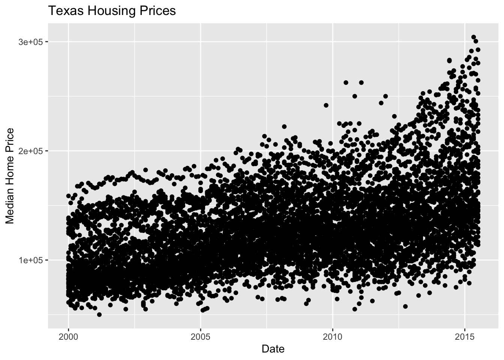
First, we may want to show some sort of overall trend line. We can start with a linear regression, but it may be better to use a loess smooth (loess regression is a fancy weighted average and can create curves without too much additional effort on your part).
geom_smooth(method = "<LINE TYPE>") where method = lm adds a linear regression model and method = loess adds a loess regression smoother.

ggplot(data = txhousing,
aes(x = date,
y = median)
) +
geom_point() +
geom_smooth(method = "lm") +
xlab("Date") +
ylab("Median Home Price") +
ggtitle("Texas Housing Prices")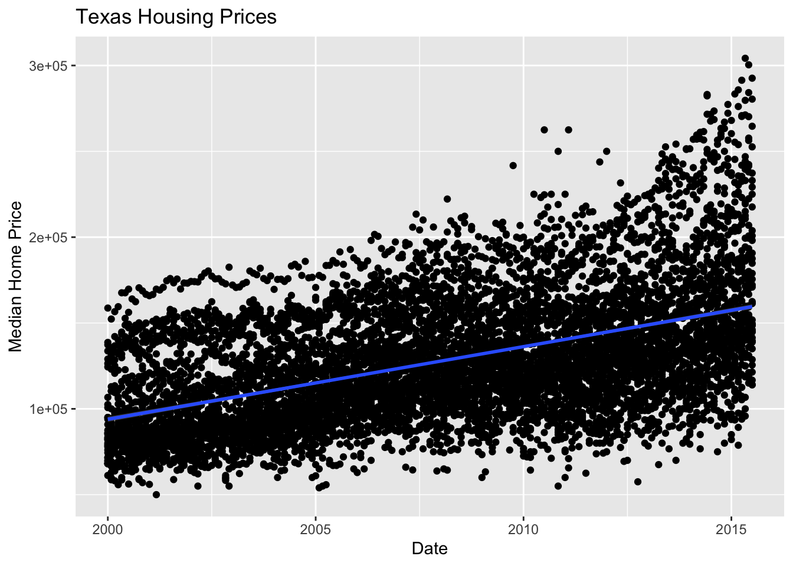
We can also use a loess (locally weighted) smooth:
ggplot(data = txhousing,
aes(x = date,
y = median)
) +
geom_point() +
geom_smooth(method = "loess") +
xlab("Date") +
ylab("Median Home Price") +
ggtitle("Texas Housing Prices")Looking at the plots here, it’s clear that there are small sub-groupings (see, for instance, the almost continuous line of points at the very top of the group between 2000 and 2005). Let’s see if we can figure out what those additional variables are…
As it happens, the best viable option is City.
...aes(...color = <VARIABLE>)

ggplot(data = txhousing,
aes(x = date,
y = median,
color = city
)
) +
geom_point() +
geom_smooth(method = "loess") +
xlab("Date") +
ylab("Median Home Price") +
ggtitle("Texas Housing Prices")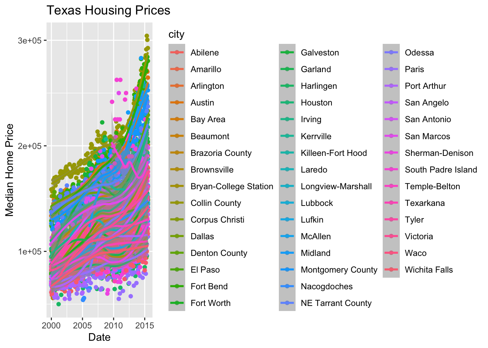
That’s a really crowded graph! It’s slightly easier if we just take the points away and only show the statistics, but there are still way too many cities to be able to tell what shade matches which city.
In reality, though, you should not ever map color to something with more than about 7 categories if your goal is to allow people to trace the category back to the label. It just doesn’t work well perceptually.
So let’s work with a smaller set of data: Houston, Dallas, Fort worth, Austin, and San Antonio (the major cities). Don’t worry too much about the subsetting code yet, we will get to that next week!
citylist <- c("Houston", "Austin", "Dallas", "Fort Worth", "San Antonio")
housingsub <- txhousing |>
filter(city %in% citylist)
ggplot(data = housingsub, #<<
aes(x = date,
y = median,
color = city
)
) +
geom_point() +
geom_smooth(method = "loess") +
xlab("Date") +
ylab("Median Home Price") +
ggtitle("Texas Housing Prices (subset of cities)")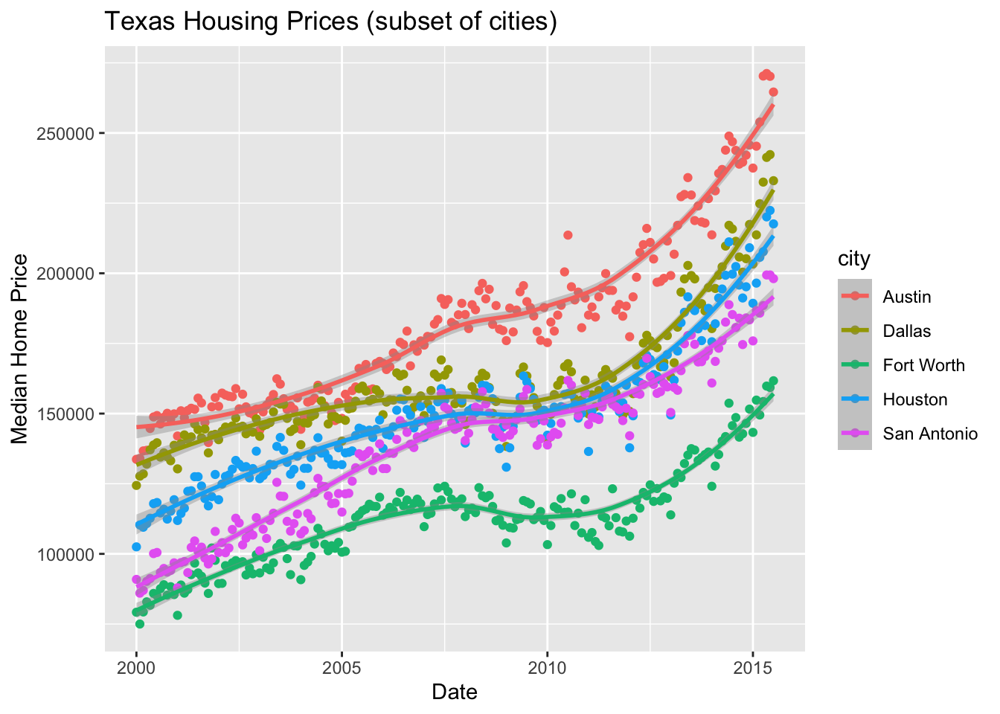
Instead of using color, another way to show this data is to plot each city as its own subplot. In ggplot2 lingo, these subplots are called “facets”. In visualization terms, we call this type of plot “small multiples” - we have many small charts, each showing the trend for a subset of the data.
Here’s the facetted version of the chart:
ggplot(data = housingsub,
aes(x = date,
y = median
)
) +
geom_point() +
geom_smooth(method = "loess") +
facet_wrap(~ city) +
xlab("Date") +
ylab("Median Home Price") +
ggtitle("Texas Housing Prices (subset of cities)")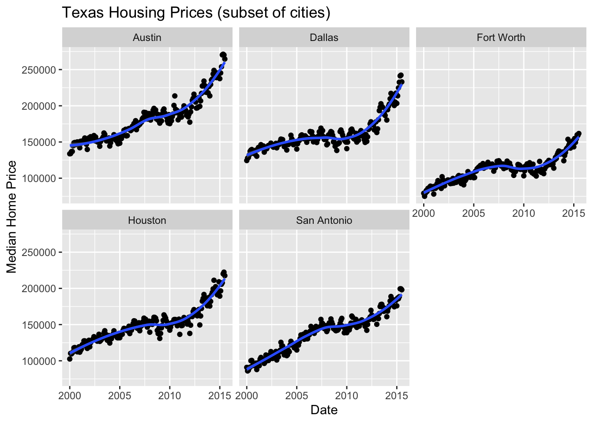
Notice I’ve removed the aesthetic mapping to color as it’s redundant now that each city is split out in its own plot.
Now that we’ve simplified our charts a bit, we can explore a couple of the other quantitative variables by mapping them to additional aesthetics:
ggplot(data = housingsub,
aes(x = date,
y = median,
size = sales)
) +
# Make points transparent
geom_point(alpha = 0.15) +
geom_smooth(method = "loess") +
facet_wrap(~ city) +
# Remove extra information from the legend -
# line and error bands aren't what we want to show
# Also add a title
guides(size = guide_legend(title = 'Number of Sales',
override.aes = list(linetype = NA,
fill = 'transparent'
)
)
) + #<<
# Move legend to bottom right of plot
theme(legend.position = c(1, 0), #<<
legend.justification = c(1, 0)
) + #<<
xlab("Date") +
ylab("Median Home Price") +
ggtitle("Texas Housing Prices (subset of cities)")Up to this point, we’ve used the same position information - date for the \(x\) axis, median sale price for the \(y\) axis. Let’s switch that up a bit so that we can play with some transformations on the \(x\) and \(y\) axis and add variable mappings to a continuous variable.
ggplot(data = housingsub,
aes(x = listings,
y = sales,
color = city)
) +
geom_point(alpha = 0.15) +
geom_smooth(method = "loess") +
xlab("Number of Listings") +
ylab("Number of Sales") +
ggtitle("Texas Housing Prices (subset of cities)")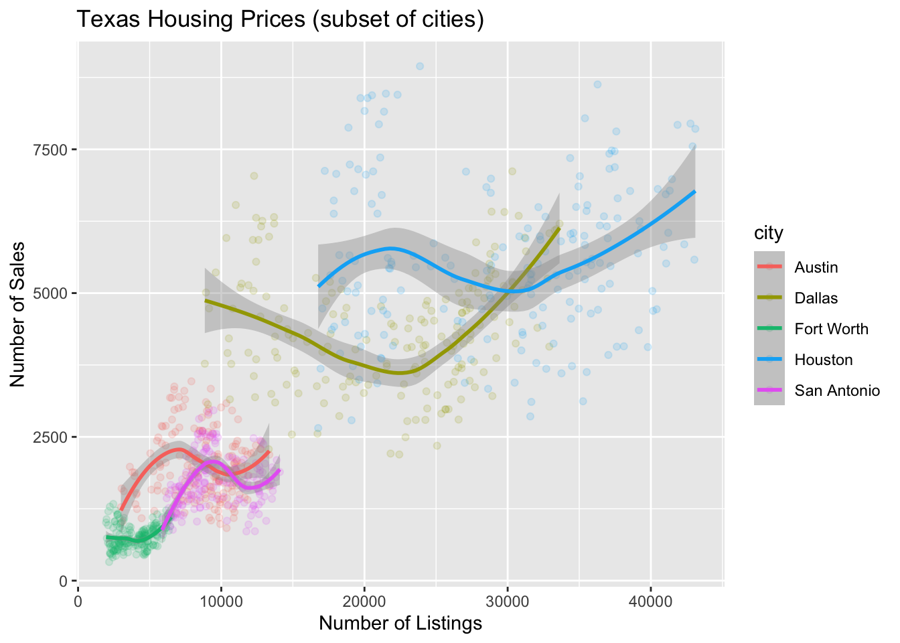
The points for Fort Worth are compressed pretty tightly relative to the points for Houston and Dallas. When we get this type of difference, it is sometimes common to use a log transformation2. Here, I have transformed both the x and y axis, since the number of sales seems to be proportional to the number of listings.
scale_x_log10(), scale_y_log10()
ggplot(data = housingsub,
aes(x = listings, #<<
y = sales, #<<
color = city
)
) +
geom_point(alpha = 0.15) +
geom_smooth(method = "loess") +
scale_x_log10() + #<<
scale_y_log10() + #<<
xlab("Number of Listings") +
ylab("Number of Sales") +
ggtitle("Texas Housing Prices")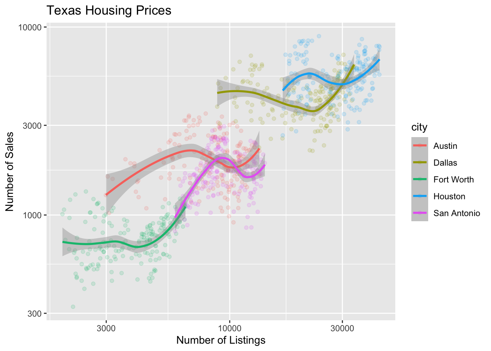
For the next demonstration, let’s look at just Houston’s data. We can examine the inventory’s relationship to the number of sales by looking at the inventory-date relationship in \(x\) and \(y\), and mapping the size or color of the point to number of sales.
houston <- txhousing |>
filter(city == "Houston")
ggplot(data = houston,
aes(x = date,
y = inventory,
size = sales
)
) +
geom_point(shape = 1) +
xlab("Date") +
ylab("Months of Inventory") +
guides(size = guide_legend(title = "Number of Sales")) +
ggtitle("Houston Housing Data")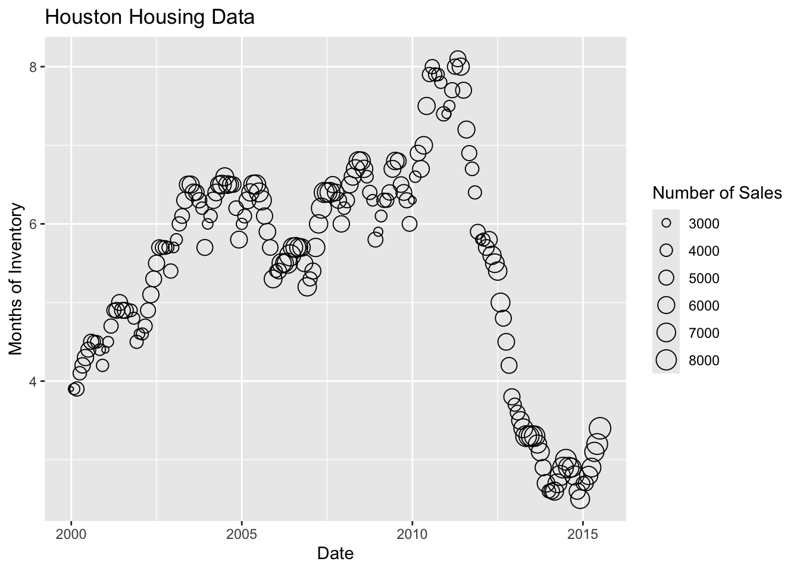
ggplot(data = houston,
aes(x = date,
y = inventory,
color = sales
)
) +
geom_point() +
xlab("Date") +
ylab("Months of Inventory") +
guides(size = guide_colorbar(title = "Number of Sales")) +
ggtitle("Houston Housing Data")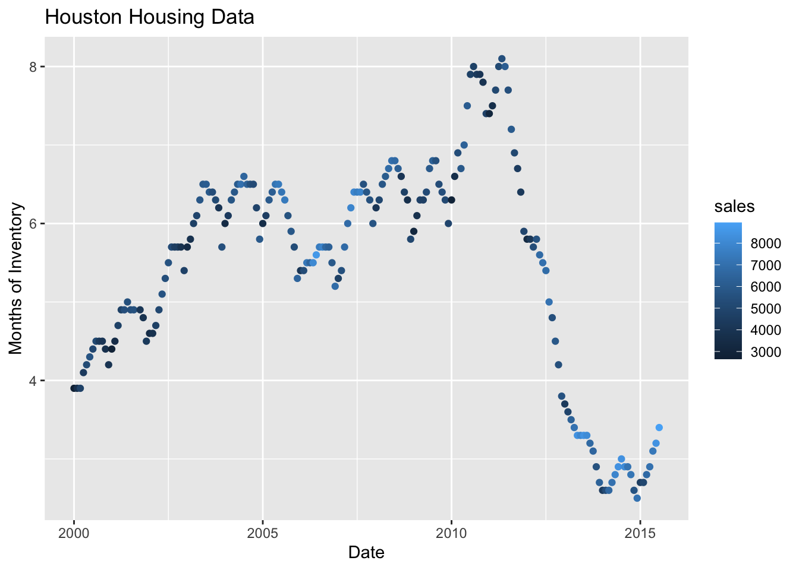
Which is easier to read?
What happens if we move the variables around and map date to the point color?
ggplot(data = houston,
aes(x = sales, #<<
y = inventory,
color = date
)
) +
geom_point() +
xlab("Number of Sales") +
ylab("Months of Inventory") +
guides(size = guide_colorbar(title = "Date")) +
ggtitle("Houston Housing Data")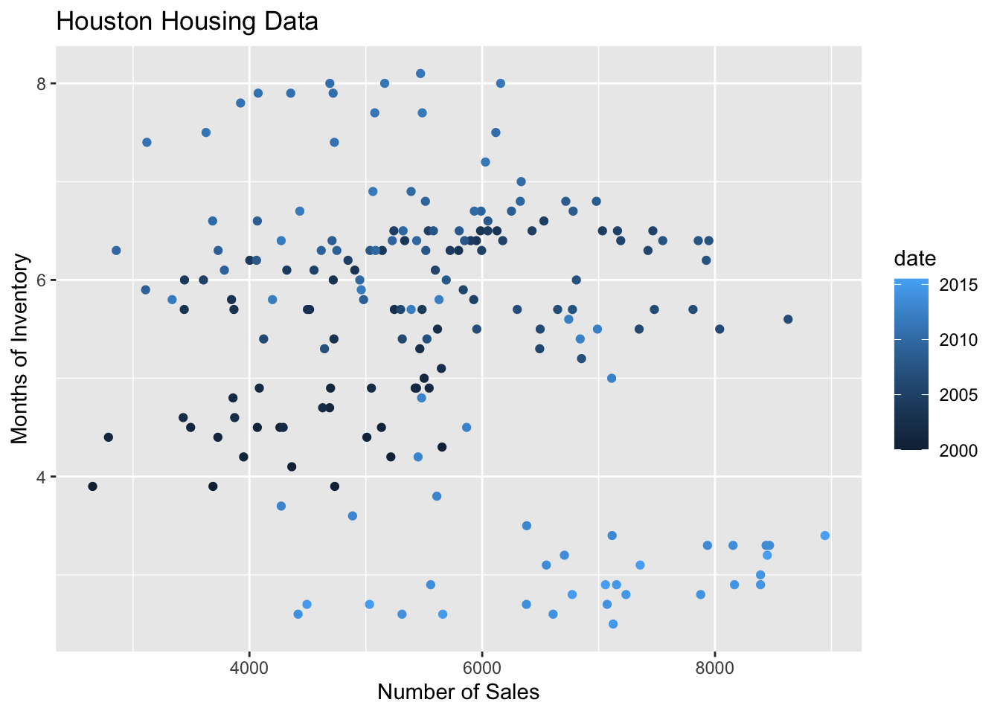
Is that easier or harder to read?
Special properties of aesthetics
Global vs Local aesthetics
Any aesthetics assigned to the mapping within the first line, ggplot(), will be inherited by the rest of the geometric, geom_xxx(), lines. This is called a global aesthetic.
ggplot(data = housingsub,
mapping = aes(x = date,
y = median,
color = city
)
) +
geom_point() +
geom_smooth(method = "lm")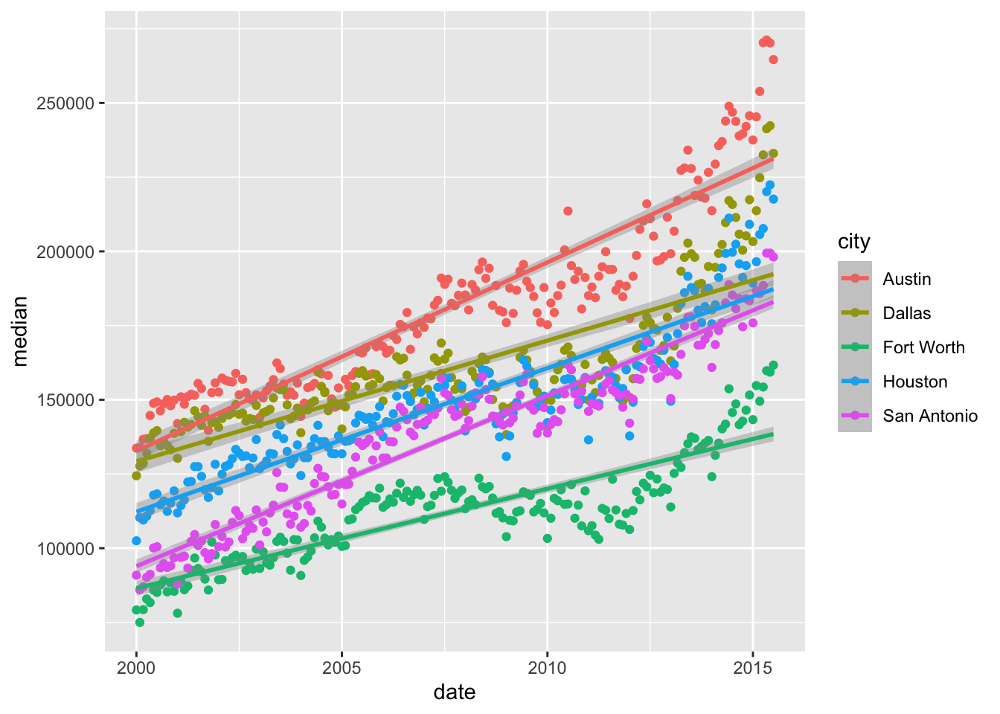
Any aesthetics assigned to the mapping within a geometric object is only applied to that specific geom. Notice how color is no longer mapped to the regression line and there is only one overall regression line for all cities.
ggplot(data = housingsub,
mapping = aes(x = date,
y = median
)
) +
geom_point(mapping = aes(color = city)
) +
geom_smooth(method = "lm")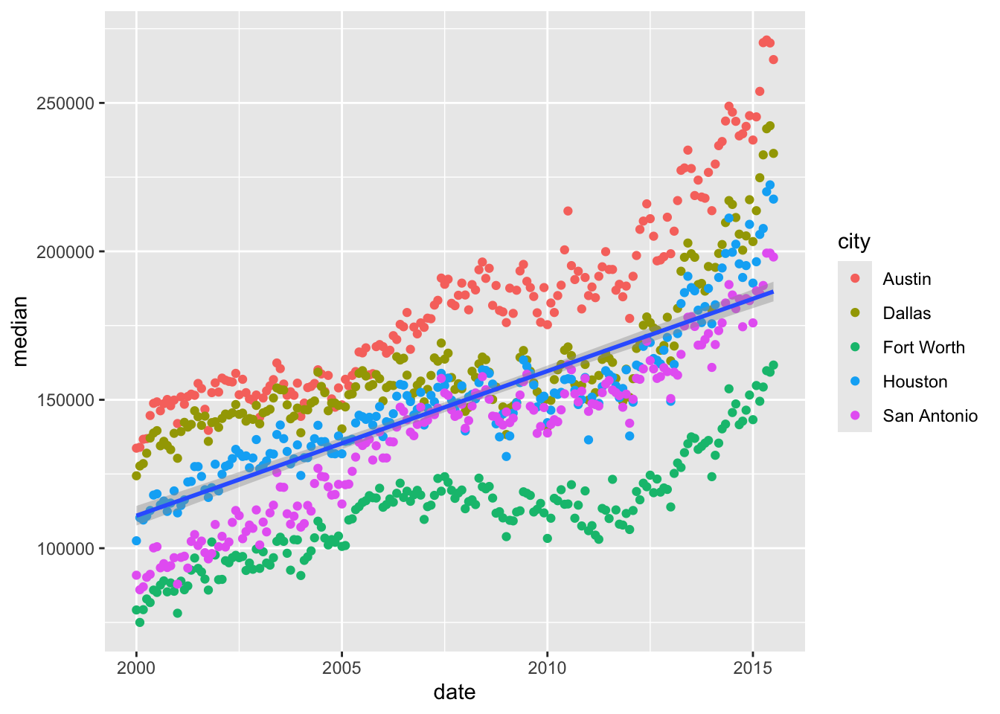
Assigning your aesthetics vs Setting your aesthetics
When you assign a variable from your data set to your aesthetics, you put it inside aes() without quotation marks around the variable name:
ggplot(data = housingsub) +
geom_point(mapping = aes(x = date,
y = median,
color = city
)
)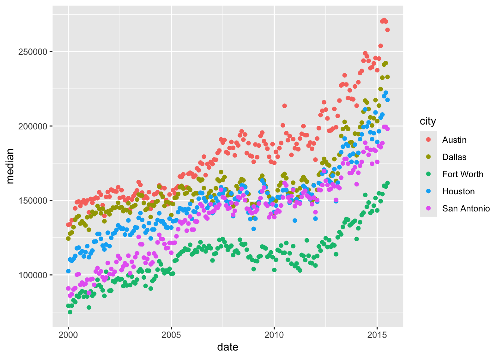
If you want to set a specific color, you could put this outside the aes() mapping in quotation marks because blue is not an object in R. Notice this color is assigned specifically in that geometric object.
ggplot(data = housingsub) +
geom_point(mapping = aes(x = date,
y = median
),
color = "blue"
)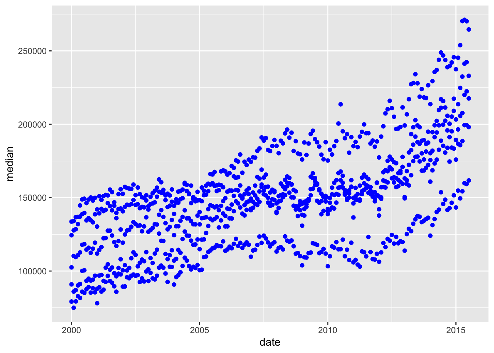
You should NOT put your color inside the aes() parentheses.
ggplot(data = txhousing) +
geom_point(mapping = aes(x = date,
y = median,
color = "blue"
)
)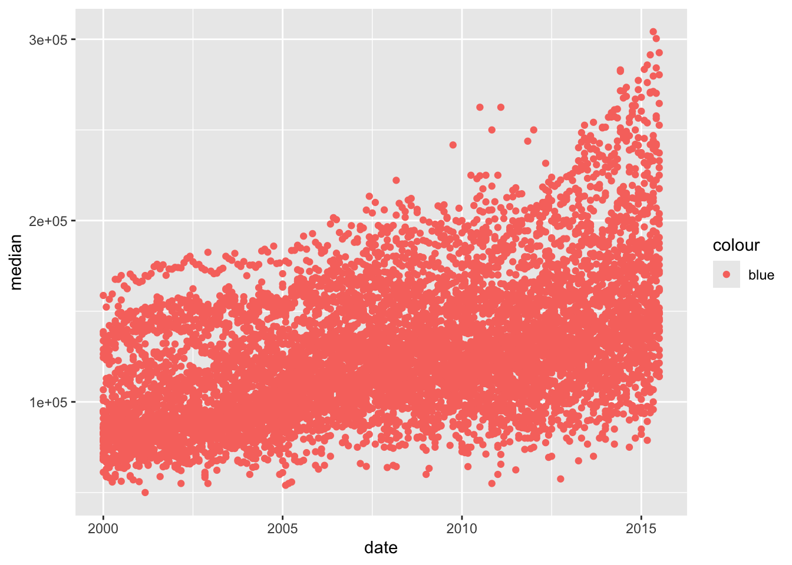
2.3.3.1 What type of chart to use?
It can be hard to know what type of chart to use for a particular type of data. I recommend figuring out what you want to show first, and then thinking about how to show that data with an appropriate plot type. Consider the following factors:
What type of variable is x? Categorical? Continuous? Discrete?
What type of variable is y?
How many observations do I have for each x/y variable?
Are there any important moderating variables?
Do I have data that might be best shown in small multiples? E.g. a categorical moderating variable and a lot of data, where the categorical variable might be important for showing different features of the data?
Once you’ve thought through this, take a look through cataloges like the R Graph Gallery to see what visualizations match your data and use-case. ### Creating Good Charts
A chart is good if it allows the user to draw useful conclusions that are supported by data. Obviously, this definition depends on the purpose of the chart - a simple EDA chart is going to have a different purpose than a chart showing e.g. the predicted path of a hurricane, which people will use to make decisions about whether or not to evacuate.
Unfortunately, while our visual system is amazing, it is not always as accurate as the computers we use to render graphics. We have physical limits in the number of colors we can perceive, our short term memory, attention, and our ability to accurately read information off of charts in different forms.
2.3.3.2 Perceptual and Cognitive Factors
Color
Our eyes are optimized for perceiving the yellow/green region of the color spectrum. Why? Well, our sun produces yellow light, and plants tend to be green. It’s pretty important to be able to distinguish different shades of green (evolutionarily speaking) because it impacts your ability to feed yourself. There aren’t that many purple or blue predators, so there is less selection pressure to improve perception of that part of the visual spectrum.

Not everyone perceives color in the same way. Some individuals are colorblind or color deficient. We have 3 cones used for color detection, as well as cells called rods which detect light intensity (brightness/darkness). In about 5% of the population (10% of XY individuals, <1% of XX individuals), one or more of the cones may be missing or malformed, leading to color blindness - a reduced ability to perceive different shades. The rods, however, function normally in almost all of the population, which means that light/dark contrasts are extremely safe, while contrasts based on the hue of the color are problematic in some instances.
You can take a test designed to screen for colorblindness here
Your monitor may affect how you score on these tests - I am colorblind, but on some monitors, I can pass the test, and on some, I perform worse than normal. A different test is available here.


 In reality, I know that I have issues with perceiving some shades of red, green, and brown. I have particular trouble with very dark or very light colors, especially when they are close to grey or brown.
In reality, I know that I have issues with perceiving some shades of red, green, and brown. I have particular trouble with very dark or very light colors, especially when they are close to grey or brown.
It is possible to simulate the effect of color blindness and color deficiency on an image.
|
|
|
|
|
|
|
|
|


In addition to colorblindness, there are other factors than the actual color value which are important in how we experience color, such as context.


Our brains are extremely dependent on context and make excellent use of the large amounts of experience we have with the real world. As a result, we implicitly “remove” the effect of things like shadows as we make sense of the input to the visual system. This can result in odd things, like the checkerboard and shadow shown above - because we’re correcting for the shadow, B looks lighter than A even though when the context is removed they are clearly the same shade.
Implications and Guidelines
- Do not use rainbow color gradient schemes - because of the unequal perception of different wavelengths, these schemes are misleading - the color distance does not match the perceptual distance.
- Avoid any scheme that uses green-yellow-red signaling if you have a target audience that may include colorblind people.
- To “colorblind-proof” a graphic, you can use a couple of strategies:
- double encoding - where you use color, use another aesthetic (line type, shape) as well to help your colorblind readers out
- If you can print your chart out in black and white and still read it, it will be safe for colorblind users. This is the only foolproof way to do it!
- If you are using a color gradient, use a monochromatic color scheme where possible. This is perceived as light -> dark by colorblind people, so it will be correctly perceived no matter what color you use.
- If you have a bidirectional scale (e.g. showing positive and negative values), the safest scheme to use is purple - white - orange. In any color scale that is multi-hue, it is important to transition through white, instead of from one color to another directly.
- Be conscious of what certain colors “mean”
- Leveraging common associations can make it easier to read a color scale and remember what it stands for (e.g. blue for cold, orange/red for hot is a natural scale, red = Republican and blue = Democrat in the US, white -> blue gradients for showing rainfall totals)
- Some colors can can provoke emotional responses that may not be desirable.3
- It is also important to be conscious of the social baggage that certain color schemes may have - the pink/blue color scheme often used to denote gender can be unnecessarily polarizing, and it may be easier to use a colder color (blue or purple) for men and a warmer color (yellow, orange, lighter green) for women4.
- There are packages such as
RColorBreweranddichromatthat have color palettes which are aesthetically pleasing, and, in many cases, colorblind friendly (dichromatis better for that thanRColorBrewer). You can also take a look at other ways to find nice color palettes.
Short Term Memory
We have a limited amount of memory that we can instantaneously utilize. This mental space, called short-term memory, holds information for active use, but only for a limited amount of time.
Try it out!
Click here, read the information, and then click to hide it.
1 4 2 2 3 9 8 0 7 8Wait a few seconds, then expand this section
What was the third number?Without rehearsing the information (repeating it over and over to yourself), the try it out task may have been challenging. Short term memory has a capacity of between 3 and 9 “bits” of information.
In charts and graphs, short term memory is important because we need to be able to associate information from e.g. a key, legend, or caption with information plotted on the graph. As a result, if you try to plot more than ~6 categories of information, your reader will have to shift between the legend and the graph repeatedly, increasing the amount of cognitive labor required to digest the information in the chart.
Where possible, try to keep your legends to 6 or 7 characteristics.
Implications and Guidelines
-
Limit the number of categories in your legends to minimize the short term memory demands on your reader.
- When using continuous color schemes, you may want to use a log scale to better show differences in value across orders of magnitude.
Use colors and symbols which have implicit meaning to minimize the need to refer to the legend.
Add annotations on the plot, where possible, to reduce the need to re-read captions.
Grouping and Sense-making
Imposing order on visual chaos.
What does the figure below look like to you?

When faced with ambiguity, our brains use available context and past experience to try to tip the balance between alternate interpretations of an image. When there is still some ambiguity, many times the brain will just decide to interpret an image as one of the possible options.

Did you see something like “3 circles, a triangle with a black outline, and a white triangle on top of that”? In reality, there are 3 angles and 3 pac-man shapes. But, it’s much more likely that we’re seeing layers of information, where some of the information is obscured (like the “mouth” of the pac-man circles, or the middle segment of each side of the triangle). This explanation is simpler, and more consistent with our experience.
Now, look at the logo for the Pittsburgh Zoo.

Do you see the gorilla and lionness? Or do you see a tree? Here, we’re not entirely sure which part of the image is the figure and which is the background.
The ambiguous figures shown above demonstrate that our brains are actively imposing order upon the visual stimuli we encounter. There are some heuristics for how this order is applied which impact our perception of statistical graphs.
The catchphrase of Gestalt psychology is
The whole is greater than the sum of the parts
That is, what we perceive and the meaning we derive from the visual scene is more than the individual components of that visual scene.

You can read about the gestalt rules here, but they are also demonstrated in the figure above.
In graphics, we can leverage the gestalt principles of grouping to create order and meaning. If we color points by another variable, we are creating groups of similar points which assist with the perception of groups instead of individual observations. If we add a trend line, we create the perception that the points are moving “with” the line (in most cases), or occasionally, that the line is dividing up two groups of points. Depending on what features of the data you wish to emphasize, you might choose different aesthetics mappings, facet variables, and factor orders.
Suppose I want to emphasize the change in the murder rate between 1980 and 2010.
I could use a bar chart (showing only the first 4 states alphabetically for space)
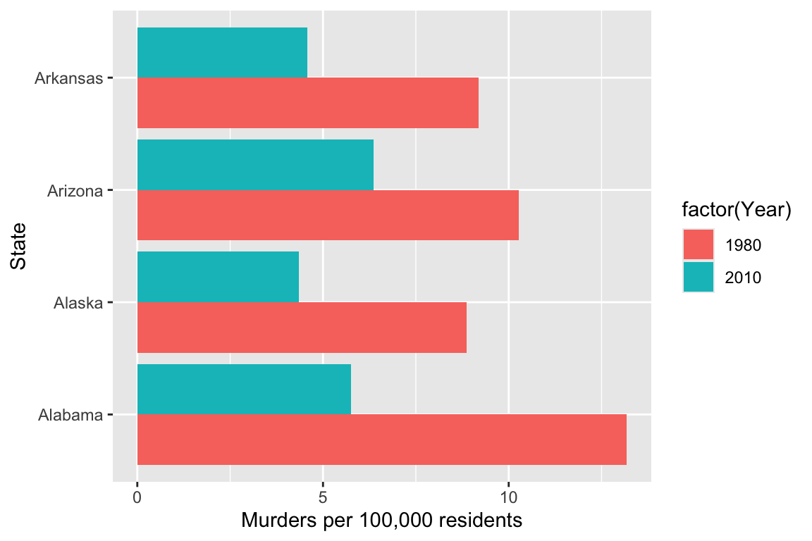
Or, I could use a line chart
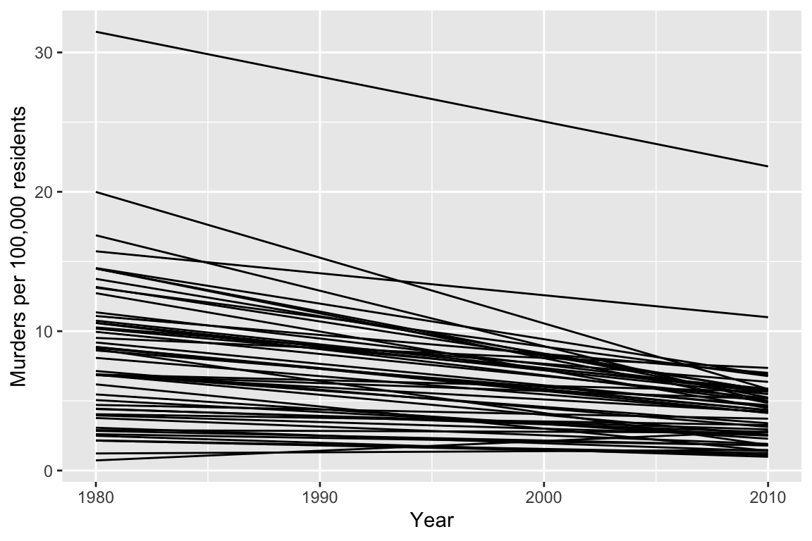
Or, I could use a box plot
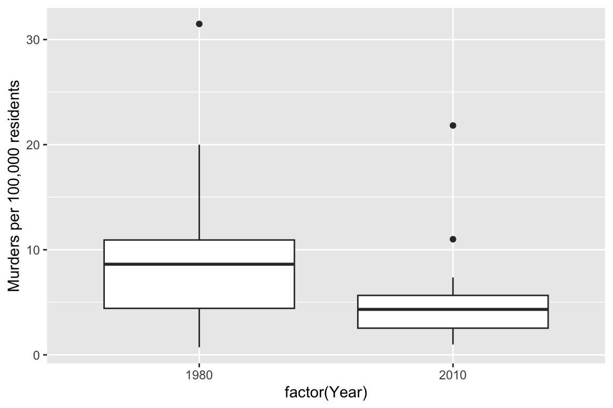
Which one best demonstrates that in every state and region, the murder rate decreased?
The line segment plot connects related observations (from the same state) but allows you to assess similarity between the lines (e.g. almost all states have negative slope). The same information goes into the creation of the other two plots, but the bar chart is extremely cluttered, and the boxplot doesn’t allow you to connect single state observations over time. So while you can see an aggregate relationship (overall, the average number of murders in each state per 100k residents decreased) you can’t see the individual relationships.
The aesthetic mappings and choices you make when creating plots have a huge impact on the conclusions that you (and others) can easily make when examining those plots.^[See this paper for more details.
General guidelines for accuracy
There are certain tasks which are easier for us relative to other, similar tasks.
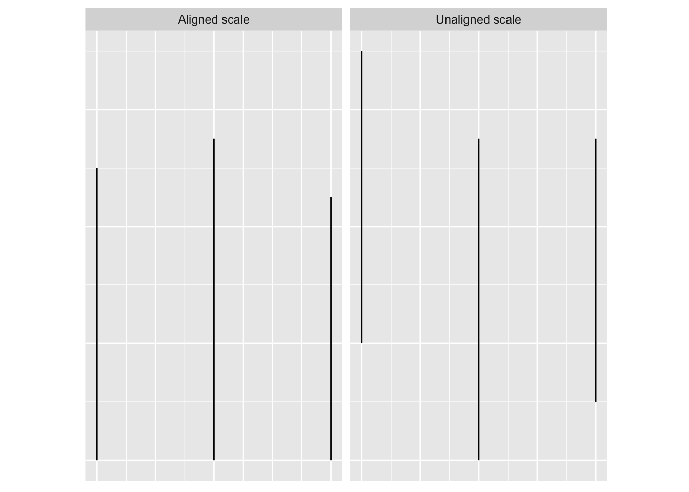
When making judgments corresponding to numerical quantities, there is an order of tasks from easiest (1) to hardest (6), with equivalent tasks at the same level.5
- Position (common scale)
- Position (non-aligned scale)
- Length, Direction, Angle, Slope
- Area
- Volume, Density, Curvature
- Shading, Color Saturation, Color Hue
If we compare a pie chart and a stacked bar chart, the bar chart asks readers to make judgements of position on a non-aligned scale, while a pie chart asks readers to assess angle. This is one reason why pie charts are not preferable – they make it harder on the reader, and as a result we are less accurate when reading information from pie charts.
When creating a chart, it is helpful to consider which variables you want to show, and how accurate reader perception needs to be to get useful information from the chart. In many cases, less is more - you can easily overload someone, which may keep them from engaging with your chart at all. Variables which require the reader to notice small changes should be shown on position scales (x, y) rather than using color, alpha blending, etc.
There is also a general increase in dimensionality from 1-3 to 4 (2d) to 5 (3d). In general, showing information in 3 dimensions when 2 will suffice is misleading - the addition of that extra dimension causes an increase in chart area allocated to the item that is disproportionate to the actual area.
 .
.
Extra dimensions and other annotations are sometimes called “chartjunk” and should only be used if they contribute to the overall numerical accuracy of the chart (e.g. they should not just be for decoration).
R graphics
- ggplot2 cheat sheet
- ggplot2 aesthetics cheat sheet - aesthetic mapping one page cheatsheet
- ggplot2 reference guide
- ggplot tricks
- R graph cookbook
- Data Visualization in R
Check-in 2.2: Introduction to Data Visualization with ggplot2
Complete the Canvas quiz to make sure you understand the basics of using ggplot2 to create graphics.
PA 2: Using Data Visualization to Find the Penguins
You will be exploring different types of visualizations to uncover which species of penguins reside on different islands.
Visit PA2: Using Data Visualization to Find the Penguins to see instructions for completing this activity.
References
Sarkar, Dipanjan (DJ). 2018. “A Comprehensive Guide to the Grammar of Graphics for Effective Visualization of Multi-Dimensional….” Medium. https://towardsdatascience.com/a-comprehensive-guide-to-the-grammar-of-graphics-for-effective-visualization-of-multi-dimensional-1f92b4ed4149.
Wilkinson, Leland. 2005. The Grammar of Graphics. 2nd ed. Statistics and Computing. New York: Springer Science.
though there are a seemingly infinite number of actual formats, and they pop up at the most inconvenient times↩︎
This isn’t necessarily a good thing, but you should know how to do it. The jury is still very much out on whether log transformations make data easier to read and understand↩︎
When the COVID-19 outbreak started, many maps were using white-to-red gradients to show case counts and/or deaths. The emotional association between red and blood, danger, and death may have caused people to become more frightened than what was reasonable given the available information.↩︎
Lisa Charlotte Rost. What to consider when choosing colors for data visualization.↩︎
See this paper for the major source of this ranking; other follow-up studies have been integrated, but the essential order is largely unchanged.↩︎